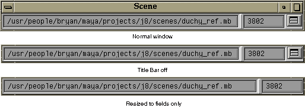

sceneMonitor

A "real-time" scene name and triangle count monitor that continually displays the scene name and the total number of polygon mesh triangles for the entire scene.
The button beside the triangle count allows you to toggle the window's Title Bar on and off. You can also toggle the Title Bar by highlighting either text field and pressing the ENTER key on the Numeric Keypad. With the Title Bar turned off, you can drag the size of the scene name larger so all that is displayed is the scene name and the triangle count.
Note: Not all operations will not trigger the update for the monitor. If you suspect the triangle count is incorrect, unselect the current model.